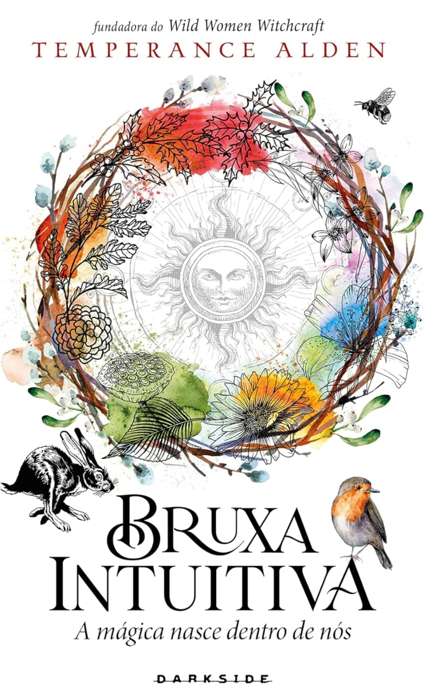
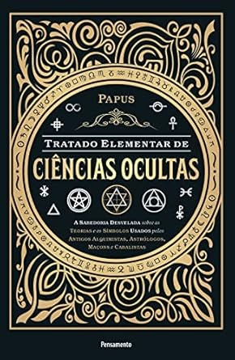
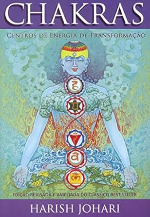

Religião e Esotérico
Livros
Mulheres, Mitos e Deusas - Martha Robles

Bruxa Intuitiva - Temperance Alden
Bhagavad Gita: Texto Clássico Indiano - Kṛṣṇa Dvaipayana Vyāsa
O Evangelho segundo o Espiritismo - Allan Kardec

Tratado Elementar de Ciências Ocultas: a Sabedoria Desvelada Sobre as Teorias e os Símbolos Usados Pelos Antigos Alquimistas, Astrólogos, Maçons e Cabalistas- Papus
Violetas na Janela - Patrícia
Bruxa Natural - Arin Murphy-Hiscock
